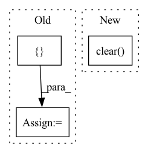

Pattern ID :4820
Before Change
commit=False,
)
self.preds = []
self.targets = []
After Change
plt.clf()
self.preds.clear()
self.targets.clear()
class LogF1PrecRecHeatmapToWandb(Callback):
Generate f1, precision, recall heatmap every epoch and send it to wandb.In pattern: SUPERPATTERN
Frequency: 9
Non-data size: 3
Instances Fragment ID: 17031009
Project Name: ashleve/lightning-hydra-template
Commit Name: fca999f527f1af5718df190e2c746adfd91816b0
Time: 2021-03-22
Author: zalewski.ukas@gmail.com
File Name: src/callbacks/wandb_callbacks.py
M Class Name: LogConfusionMatrixToWandb
N Class Name: LogConfusionMatrixToWandb
M Method Name: on_validation_epoch_end(3)
N Method Name: on_validation_epoch_end(3)
M Parent Class: Callback
N Parent Class: Callback
M File Name: src/callbacks/wandb_callbacks.py
N File Name: src/callbacks/wandb_callbacks.py
M Start Line: 165
M End Line: 180
N Start Line: 107
N End Line: 136
Before Change
if not self.hook_registered:
self._register_hook()
self.hidden = {}
_ = self.net(x)
hidden = self.hidden[x.device]
assert hidden is not None, f"hidden layer {self.layer} never emitted an output"After Change
self.hidden.clear()
_ = self.net(x)
hidden = self.hidden[x.device]
self.hidden.clear()
assert hidden is not None, f"hidden layer {self.layer} never emitted an output"
return hidden
Fragment ID: 17031008
Project Name: lucidrains/byol-pytorch
Commit Name: 88a9d9d2e4edb1c1a314bf5fce12ae1db981b7bc
Time: 2021-02-13
Author: lucidrains@gmail.com
File Name: byol_pytorch/byol_pytorch.py
M Class Name: NetWrapper
N Class Name: NetWrapper
M Method Name: get_representation(2)
N Method Name: get_representation(2)
M Parent Class: nn.Module
N Parent Class: nn.Module
M File Name: byol_pytorch/byol_pytorch.py
N File Name: byol_pytorch/byol_pytorch.py
M Start Line: 140
M End Line: 140
N Start Line: 140
N End Line: 143
Before Change
def _valid_epoch(self, data_loader, model, use_cuda, total_batch, verbose, criterion):
model.train(False)
total_loss = []
total_acc = []
cnt = 0
loc_size = model.loc_size
for batch in data_loader:
batch.to_tensor(gpu=use_cuda)After Change
def _valid_epoch(self, data_loader, model, use_cuda, total_batch, verbose, criterion):
model.train(False)
self.evaluator.clear()
total_loss = []
cnt = 0
for batch in data_loader:
batch.to_tensor(gpu=use_cuda) Fragment ID: 17030999
Project Name: libcity/bigscity-libcity
Commit Name: 51403f094fe439b6470cf8b36665bff72f09fddd
Time: 2020-12-23
Author: 33283819+WenMellors@users.noreply.github.com
File Name: trafficdl/executor/traj_loc_pred_executor.py
M Class Name: TrajLocPredExecutor
N Class Name: TrajLocPredExecutor
M Method Name: _valid_epoch(7)
N Method Name: _valid_epoch(7)
M Parent Class: AbstractExecutor
N Parent Class: AbstractExecutor
M File Name: trafficdl/executor/traj_loc_pred_executor.py
N File Name: trafficdl/executor/traj_loc_pred_executor.py
M Start Line: 135
M End Line: 149
N Start Line: 131
N End Line: 149
Before Change
def clear_trace():
_FUNC_TRACES = {} // noqa: F841
def get_trace(average=True, max_history=None):After Change
def clear_trace() -> None:
_func_traces.clear()
def get_trace(
average: bool = True, Fragment ID: 17030997
Project Name: gpauloski/kfac_pytorch
Commit Name: bd21ac7cebe30f20c93f4c1bedc748daf5bf28b5
Time: 2022-03-17
Author: 18683347+gpauloski@users.noreply.github.com
File Name: kfac/tracing.py
M Class Name: AnonimousClass
N Class Name: AnonimousClass
M Method Name: clear_trace(0)
N Method Name: clear_trace(0)
M Parent Class:
N Parent Class:
M File Name: kfac/tracing.py
N File Name: kfac/tracing.py
M Start Line: 9
M End Line: 9
N Start Line: 16
N End Line: 16
Before Change
super().__del__()
def _buffer(self):
for cbuf in METAL.mtl_buffers_in_flight: cbuf.waitUntilCompleted()
METAL.mtl_buffers_in_flight = []
return self._cl.contents().as_buffer(self._cl.length())
def unwrap(x):
ret, err = xAfter Change
super().__del__()
def _buffer(self):
for cbuf in METAL.mtl_buffers_in_flight: cbuf.waitUntilCompleted()
METAL.mtl_buffers_in_flight.clear()
return self._cl.contents().as_buffer(self._cl.length())
def unwrap(x):
ret, err = x Fragment ID: 17031002
Project Name: geohot/tinygrad
Commit Name: f3ac52aee8299580a332de157711183c388a6a62
Time: 2023-03-11
Author: 72895+geohot@users.noreply.github.com
File Name: tinygrad/runtime/ops_metal.py
M Class Name: RawMetalBuffer
N Class Name: RawMetalBuffer
M Method Name: _buffer(1)
N Method Name: _buffer(1)
M Parent Class: RawBufferMapped
N Parent Class: RawBufferMapped
M File Name: tinygrad/runtime/ops_metal.py
N File Name: tinygrad/runtime/ops_metal.py
M Start Line: 30
M End Line: 30
N Start Line: 30
N End Line: 30
Before Change
torch.cuda.set_rng_state(gpu_rng_state, self.device)
def clear_state(self):
self.state = {}
class Partition(nn.Module):
After Change
torch.cuda.set_rng_state(gpu_rng_state, self.device)
def clear_state(self):
self.state.clear()
class Partition(nn.Module):
Fragment ID: 17031007
Project Name: saareliad/ftpipe
Commit Name: 55224ec831718fea95aaf8e91b7137e31f3ae44a
Time: 2019-12-01
Author: saareliad@campus.technion.ac.il
File Name: communication/partition.py
M Class Name: PartitionRngStasher
N Class Name: PartitionRngStasher
M Method Name: clear_state(1)
N Method Name: clear_state(1)
M Parent Class:
N Parent Class:
M File Name: communication/partition.py
N File Name: communication/partition.py
M Start Line: 43
M End Line: 43
N Start Line: 43
N End Line: 43
Before Change
from contextlib import redirect_stdout
with redirect_stdout(outfile):
tmp_cfg = copy.deepcopy(self)
tmp_cfg.cfg_check_funcs = []
print(tmp_cfg.dump())
super(CN, self).freeze()
After Change
from contextlib import redirect_stdout
with redirect_stdout(outfile):
tmp_cfg = copy.deepcopy(self)
tmp_cfg.cfg_check_funcs.clear()
print(tmp_cfg.dump())
super(CN, self).freeze()
Fragment ID: 17031005
Project Name: alibaba/federatedscope
Commit Name: 6de2cc3278a86c7d3acce55ea77ee8dc536397a8
Time: 2022-05-24
Author: gaodawei.gdw@alibaba-inc.com
File Name: federatedscope/core/configs/config.py
M Class Name: CN
N Class Name: CN
M Method Name: freeze(1)
N Method Name: freeze(1)
M Parent Class: CfgNode
N Parent Class: CfgNode
M File Name: federatedscope/core/configs/config.py
N File Name: federatedscope/core/configs/config.py
M Start Line: 97
M End Line: 98
N Start Line: 125
N End Line: 126
Before Change
def _clear_runtime_cache():
global _runtime_instances
_runtime_instances = {}
def _get_runtime_home(runtime_type: str):
load_config_home = _RUNTIME_HOMES.get(runtime_type)After Change
def _clear_runtime_cache():
_runtime_instances.clear()
def _get_runtime_home(runtime_type: str):
load_config_home = _RUNTIME_HOMES.get(runtime_type) Fragment ID: 17031004
Project Name: oap-project/cloudtik
Commit Name: 0147afa808f1d18ff5c1526f77d4d7986f988dce
Time: 2022-05-02
Author: haifeng.chen@intel.com
File Name: python/cloudtik/core/_private/runtime_factory.py
M Class Name: AnonimousClass
N Class Name: AnonimousClass
M Method Name: _clear_runtime_cache(0)
N Method Name: _clear_runtime_cache(0)
M Parent Class:
N Parent Class:
M File Name: python/cloudtik/core/_private/runtime_factory.py
N File Name: python/cloudtik/core/_private/runtime_factory.py
M Start Line: 130
M End Line: 131
N Start Line: 131
N End Line: 131